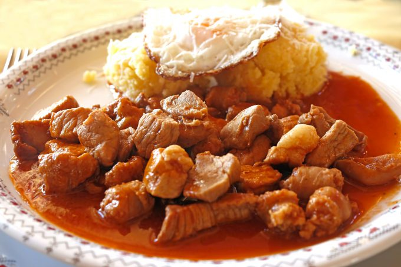

Tochitura

What a great tasting dish!
Also known as Pork Stew, this dish looks nothing like a real stew, but the taste, texture and smell are mind-twisting!
Ingredients:
- Ground Beef
- Pork Sausages and Ribs
- Bacon
- Pork Tenderloin
- Paprika
- Garlic
- Oil
- Bay Leaves
Preparation:
- Preheat the pot over medium-high, add vegetable oil, sliced bacon and cook for 7-8 minutes to render the fat.
- Add sliced pork tenderloin and sliced sausages, stir well to coat the tenderloin with fat. Add some paprika and cook for about 3 minutes.
- Add the garlic and saute for 1-2 minutes then pour in water along with a couple of bay leaves, cover and cook on medium to low heat for about 30 minutes
- Final step would be to add all the herbs and cook it for another 10 minutes, covered.
Return to top.
Return to main page.